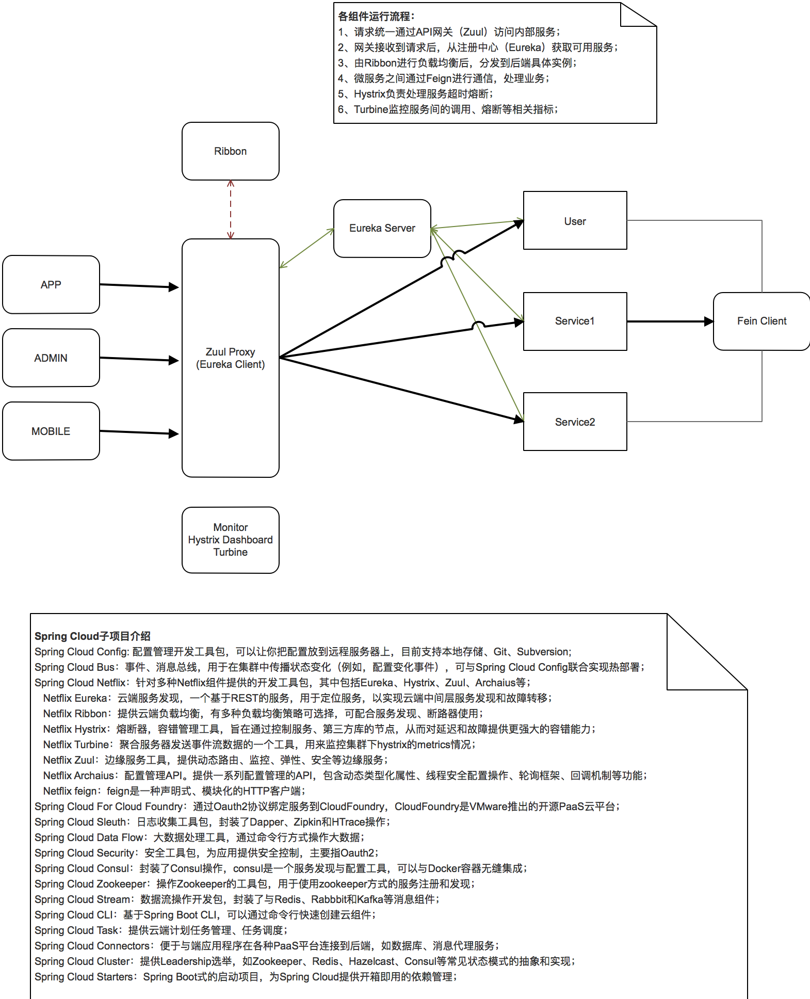
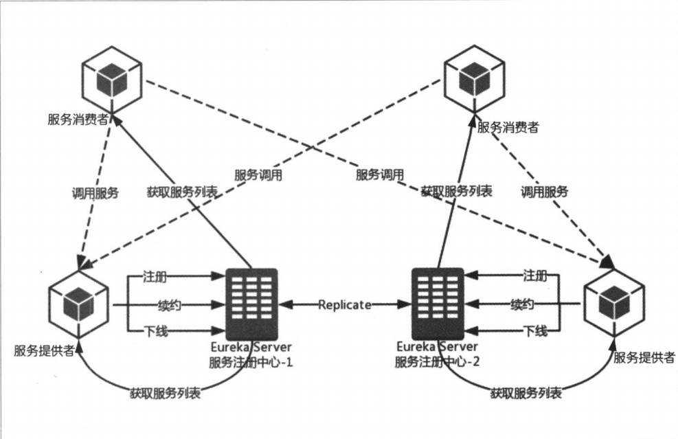
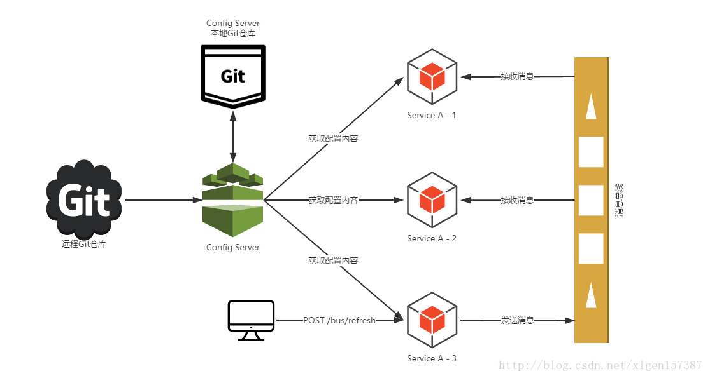

组件

Zuul
Zuul 是在云平台上提供动态路由,监控,弹性,安全等边缘服务的框架。Zuul 相当于是设备和 Netflix 流应用的 Web 网站后端所有请求的前门。
服务网关是微服务架构中一个不可或缺的部分。通过服务网关统一向外系统提供REST API的过程中，除了具备服务路由、均衡负载功能之外，它还具备了权限控制等功能。Spring Cloud Netflix中的Zuul就担任了这样的一个角色，为微服务架构提供了前门保护的作用，同时将权限控制这些较重的非业务逻辑内容迁移到服务路由层面，使得服务集群主体能够具备更高的可复用性和可测试性。
Eureka
云端服务发现，一个基于 REST 的服务，用于定位服务，以实现云端中间层服务发现和故障转移。

三部分：服务注册中心、服务提供者、服务消费者；
两功能：服务注册、服务发现；
运行流程：
- 两台
Eureka服务注册中心组成主从注册中心集群（防止一台挂掉整个服务挂掉）； 服务提供者向Eureka服务注册中心进行注册、续约、下线服务等操作；服务消费者从Eureka服务注册中心拉取服务列表，并维护在本地（这是客户端发现模式的机制体现）；服务消费者根据服务列表找到对应服务提供者，进行消费；
注意：
服务续约任务调用时间间隔，默认30s；
服务缓存清单更新机制，次/30s；
服务时效时间，默认90s；
默认每60s将当前清单中超过90s（没有续约）的服务踢出去；
自我保护机制，工作机制是如果15min内超过85%的客户端节点都没有正常的心跳，那么Eureka就认为客户端与注册中心出现了网络故障，Eureka Server自动进入自我保护机制。（Eureka自我保护机制，通过配置eureka.server.enable-self-preservation，默认为打开状态，建议生产环境打开此配置）
- Eureka Server不再从注册列表中移除因为长时间没收到心跳检测的
过期服务；
- Eureka Server仍然能够接受新服务的注册、查询请求，但是不会同步到其他节点上，保证当前节点依然可用；
- 当网络稳定时，当前Eureka Server新的注册信息会被同步到其他节点上；
- Eureka Server不再从注册列表中移除因为长时间没收到心跳检测的
Ribbon
提供云端负载均衡，有多种负载均衡策略可供选择，可配合服务发现和断路器使用。
服务消费者根据服务列表中的服务提供者，找到实际的服务生产者，通过Spring Cloud Ribbon实现。
负载均衡策略：
- RandomRule：从实例列表随机选取。选择逻辑在一个while(server == null)循环内，正常情况下会返回一个服务实例。如果出现死循环，取不到服务实例，则有可能存在并发的bug；
- RoundRobinRule（默认）：按照线性轮询选择一个实例。随机次数超过10次，结束尝试；
- WeightedResponseTimeRule：基于RoundRobinRule，增加了根据实例的运行情况计算权重，然后根据权重挑选实例。主要有三个核心内容：
- 定时任务
- 每30s执行一次权重计算；
- 权重计算
- 记录每个实例的统计信息，累加所有实例的平均响应时间，得到总平均响应时间，totalResponseTime；
- 循环所有的实例，计算其权重，weightSoFar+=totalResponseTime - 实例平均响应时间，其中weightSoFar初始值为0。每个实例权重结果，保存到ArrayList currentWeights中；
- 实例选择
- 判断最后一个实例的权重，是否 < 0.001d，若是，采用RoundRobbinRule策略；
- 生成一个[0, 最大权重值) 区间内的随机数；
- 遍历权重清单currentWeights，若权重 >= 随机得到的数值，就选择这个实例；
- 定时任务
- 其他策略还有BestAvailableRule、AvaliablityFilteringRule、ZoneAvoidanceRule、RetryRule
Feign
Feign是一种声明式、模板化的HTTP客户端。
Spring Cloud Feign 是一个声明web服务客户端，这使得编写Web服务客户端更容易，使用Feign 创建一个接口并对它进行注解，它具有可插拔的注解支持包括Feign注解与JAX-RS注解，Feign还支持可插拔的编码器与解码器，Spring Cloud 增加了对 Spring MVC的注解，Spring Web 默认使用了HttpMessageConverters, Spring Cloud 集成 Ribbon 和 Eureka 提供的负载均衡的HTTP客户端 Feign。
Hystrix
熔断器，容错管理工具，旨在通过熔断机制控制服务和第三方库的节点,从而对延迟和故障提供更强大的容错能力。
在分布式架构中，当某个服务单元发生故障（类似电器发生短路）之后，通过断路器的故障监控（类似熔断保险丝）， 想调用方返回一个错误响应，而不是长时间等待，这样就不会使得线程因调用故障服务被长时间占用不放，避免了故障在分布式系统中的蔓延
针对这一机制，Spring Cloud Hystrix实现了断路器，线程隔离等一系列服务保护功能。它也是基于Netfix的开源框架Hystrix实现的，该框架的目标在于通过控制那些访问远程系统、服务和第三方库的节点，从而对延迟和故障提供更强大的容错能力。
Hystrix具有：
服务降级
服务熔断
- 请求总数（默认20）
- 错误百分比（默认50）
线程和信号隔离
请求缓存
请求合并
服务监控

集群监控（Turbine）
Config
配置管理工具包，让你可以把配置放到远程服务器，集中化管理集群配置，目前支持本地存储、Git以及Subversion。
分布式系统中，由于服务数量巨多，为了方便服务配置文件统一管理，实时更新，所以需要分布式配置中心组件。 在Spring Cloud中，有分布式配置中心组件Spring Cloud Config ，它支持配置服务放在配置服务的内存中（即本地），也支持放在远程Git仓库中。在Cpring Cloud Config 组件中，分两个角色，一是Config Server，二是Config Client。
Config Server用于配置属性的存储，存储的位置可以为Git仓库、SVN仓库、本地文件等，Config Client用于服务属性的读取。
Bus
事件、消息总线，用于在集群（例如，配置变化事件）中传播状态变化，可与Spring Cloud Config联合实现热部署。
在Spring Cloud Config中，我们知道的配置文件可以通过Config Server存储到Git等地方，通过Config Client进行读取，但是我们的配置文件不可能是一直不变的，当我们的配置文件放生变化的时候如何进行更新哪？
一种最简单的方式重新一下Config Client进行重新获取，但Spring Cloud绝对不会让你这样做的，Spring Cloud Bus正是提供一种操作使得我们在不关闭服务的情况下更新我们的配置。
Spring Cloud Bus官方意义：消息总线。
当然动态更新服务配置只是消息总线的一个用处，还有很多其他用处。
应用场景：
- 将消息路由到一个或多个目的地；
- 消息转换为其他的表现形式；
- 执行消息聚焦、消息分解，并将结果发送到其他的目的地，然后重新组合响应返回给消息用户；
- 调用web服务来检索数据；
- 响应错误时间；
- 使用发布-订阅模式来提供内容，或基于主题的消息路由

两个消息组件：
kafka：
| 属性名 | 说明 | 默认值 |
|---|---|---|
| spring.cloud.stream.kafka.binder.brokers | Kafka的服务端列表 | localhost |
| spring.cloud.stream.kafka.binder.defaultBrokerPort | Kafka服务端的端口。当brokers中没有配置端口时，默认使用这个端口 | 9092 |
| spring.cloud.stream.kafka.binder.zkNodes | Kafka服务端连接的Zookeeper节点列表 | localhost |
| spring.cloud.stream.kafka.binder.defaultZkPort | Zookeeper节点的默认端口。当zkNodes中没有配置端口时，默认使用这个端口 | 2181 |
RabbitMQ：
| 属性名 | 说明 | 默认值 |
|---|---|---|
| spring.rabbitmq.host | RabbitMQ的服务地址 | localhost |
| spring.rabbitmq.port | RabbitMQ的服务端口 | 5672 |
| spring.rabbitmq.username | ||
| spring.rabbitmq.password |
#总结
前面介绍了很多Spring Cloud的组件，本篇按照自己的角度来做一次归纳。
Spring Cloud技术应用从场景上可以分为两大类：润物无声类和独挑大梁类。
润物无声，融合在每个微服务中、依赖其它组件并为其提供服务。
Ribbon，客户端负载均衡，特性有区域亲和、重试机制。
Hystrix，客户端容错保护，特性有服务降级、服务熔断、请求缓存、请求合并、依赖隔离。
Feign，声明式服务调用，本质上就是Ribbon+Hystrix
Stream，消息驱动，有Sink、Source、Processor三种通道，特性有订阅发布、消费组、消息分区。
Bus，消息总线，配合Config仓库修改的一种Stream实现，
Sleuth，分布式服务追踪，需要搞清楚TraceID和SpanID以及抽样，如何与ELK整合。
独挑大梁，独自启动不需要依赖其它组件。
Eureka，服务注册中心，特性有失效剔除、服务保护。
Dashboard，Hystrix仪表盘，监控集群模式和单点模式，其中集群模式需要收集器Turbine配合。
Zuul，API服务网关，功能有路由分发和过滤。
Config，分布式配置中心，支持本地仓库、SVN、Git、Jar包内配置等模式，
每个组件都不是平白无故的产生的，是为了解决某一特定的问题而存在。
Eureka和Ribbon，是最基础的组件，一个注册服务，一个消费服务。
Hystrix为了优化Ribbon、防止整个微服务架构因为某个服务节点的问题导致崩溃，是个保险丝的作用。
Dashboard给Hystrix统计和展示用的，而且监控服务节点的整体压力和健康情况。
Turbine是集群收集器，服务于Dashboard的。
Feign是方便我们程序员些更优美的代码的。
Zuul是加在整个微服务最前沿的防火墙和代理器，隐藏微服务结点IP端口信息，加强安全保护的。
Config是为了解决所有微服务各自维护各自的配置，设置一个同意的配置中心，方便修改配置的。
Bus是因为config修改完配置后各个结点都要refresh才能生效实在太麻烦，所以交给bus来通知服务节点刷新配置的。
Stream是为了简化研发人员对MQ使用的复杂度，弱化MQ的差异性，达到程序和MQ松耦合。
Sleuth是因为单次请求在微服务节点中跳转无法追溯，解决任务链日志追踪问题的。
特殊成员Zipkin，之所以特殊是因为从jar包和包名来看它不属于Spring Cloud的一员，但是它与Spring Cloud Sleuth的抽样日志结合的天衣无缝。乍一看它与Hystrix的Dashboard作用有重叠的部分，但是他们的侧重点完全不同。Dashboard侧重的是单个服务的统计和是否可用，Zipkin侧重的监控环节时长。简言之，Dashboard侧重故障诊断，Zipkin侧重性能优化。
内容参考：
https://blog.csdn.net/yejingtao703/article/details/78331442